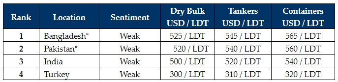

inWeekly Demolition Reports07/08/2023

This week, recycling markets essentially became an unfeasible business-place as very few Recyclers werewilling to table any firm offers, instead, tabling only low-ball indications as the remainder of the end Buyers remained rather quiet, waiting and watching the market before deciding, which direction the domestic industry is ready to proceed in.
There remain a number of unsold units that are currently being diverted to other destinations from Bangladesh, including India, in additional to a recently re-emerging Pakistani market.
Owners with vessels to sell are being price-shocked into diverting their vessels to another market or withdrawing them from the market entirely, due to a lack of sensible offers that present no encouragement / motivation / interest from Owners (or Cash Buyers) to commit for recycling.
We could therefore be entering a bleaker period of sales and activity through August, especially whilst this standoff in prices persists, and congestion abounds.
Deliveries have started to become troublesome as well, particularly for those units sold at recently higher levels and are now facing the inevitable song-and-dance at the waterfront with unreliable Cash Buyers and painful renegotiations being reported at the waterfront.
As such, it is an extremely frustrating and fraught market at present, with Owners and Cash Buyers alike, who are becoming disillusioned by the falling levels and lack of serious offers. There is only so much chasing down a market that can be endured before some sort of stability is seen, especially once prices level out and the industry finally accepts the levels on the ground.
L/Cs also remain an area of concern in Bangladesh as it has been taking much longer to get L/C approvals over USD 5 million these days, and this is leading to delays in obtaining offers and getting vessels delivered.
For week 31 of 2023, GMS demo rankings / pricing for the week are as below.

📄 Download PDF: Ship-recycling-market-insight-week-31-2023-Avoid.pdfSource: GMS,Inc. ,https://www.gmsinc.net/gms_new/index.php/web